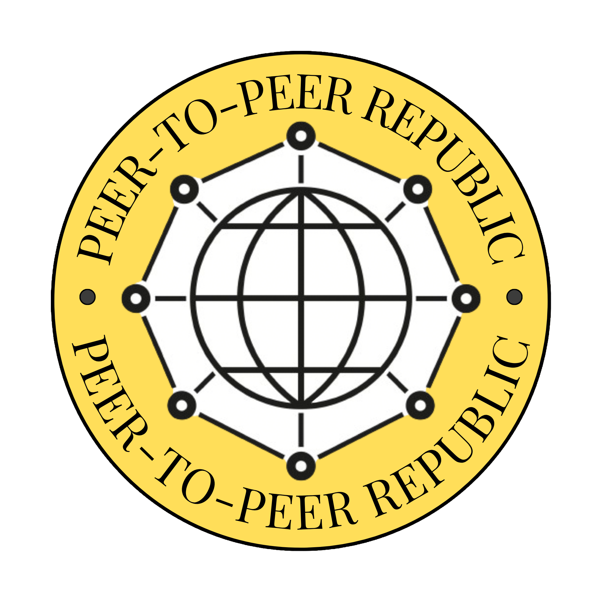
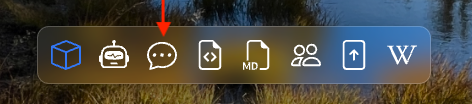
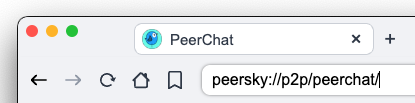

Peer-to-Peer Republic
A movement, open republic of humans building peer-to-peer systems that redistribute power and reimagine the internet as a public good, not a product a platform sells.
Peer-to-Peer Republic is a movement built by people who believe the internet can be better than what it has become. Republic here echoes res publica, the public thing we steward together, not a border or a government, but a commons shaped in the open. We are technologists, artists, activists, journalists and curious minds coming together in the open to explore and build peer-to-peer systems that put power back where it belongs, with people instead of platforms. This is not a closed group or a gated circle. It is a space for honest discussion, shared ideas, and collective effort. We believe the tools to change things already exist, and that by working in the open we can create protocols, platforms, and systems that are fair, resilient, and truly serve everyone.
PeerChat is PeerSky’s local-first peer-to-peer chat where p2prepublic is the pre-joined entry room.
peersky://p2p/peerchat/


Happy Decentralizing!